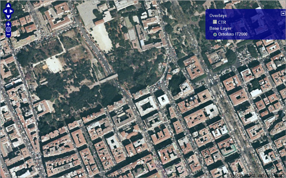

22 dicembre, 2009 | di Andrea Borruso
E’ stata appena rilasciata la release 5.6 di MapServer. Come sempre tante le novità, ma una è quella che voglio mettere in evidenza qui: è stato definito uno schema XML con cui sarà possibile definire un mapfile anche in formato XML. I mapfile sono il cuore di questa applicazione: definiscono le relazioni tra gli oggetti, i percorsi in cui sono archiviati i layer e le regole per la loro rappresentazione grafica. La sintassi con cui si scrivono normalmente – qui un esempio di “vecchio” mapfile – non consente con facilità di creare degli editor dedicati.
Uno schema XML renderà molto più semplice la creazione di applicativi dedicati alla creazione, gestione e validazione di questo speciale formato di file.
Questa release ancora non lo legge e scrive nativamente; il file XSLT fornito con questa release consentirà però di convertire un file XML costruito con questo schema, in un “normale” mapfile di MapServer.
(continua…)
Posted in News, osgeo | 2 Comments »
7 dicembre, 2009 | di Andrea Borruso
Sono ufficialmente online le presentazioni, i video ed i poster della conferenza FOSS4G (Free and Open Source Software for Geospatial) 2009, che si è conclusa da poco a Sydney.
Qui un po’ di URL di riferimento:
E’ un’occasione per chi non ha potuto essere presente, di godere dei tanti spunti che sono stati lanciati in queste giornate. Io devo ancora vederle (quasi) tutte.
Buona visione 
Posted in News | No Comments »
2 agosto, 2009 | di Alessio Di Lorenzo
Posso dire di essere un sostenitore dell’open source e senza dubbio preferisco avere a che fare con software, tecnologie e formati aperti. Al movimento del software libero sono molto legato, per alcuni versi ne faccio parte e, quando posso, cerco di dare i miei microscopici contributi qui e la.
Il mio mondo (digitale) ideale è un mondo in cui tutto il software è libero e, soprattutto, in cui le persone si scambiano dati e servizi in formati standard e liberi.
Il mondo reale, però, è fatto anche di altro e quando c’è da portare a casa la proverbiale pagnotta è bene tenerlo a mente. Inoltre penso che sia un preciso dovere, per un buon analista, essere sempre aggiornato sulle soluzioni esistenti indipendentemente dalla licenza che le accompagna.
In questo articolo racconterò quindi le impressioni che ho avuto durante le mie prime due settimane di lavoro con ArcGIS Server 9.3. Inizio subito col dire che partivo prevenuto nei confronti di questa piattaforma, date le allucinanti esperienze con ArcIMS, ma devo ammettere di essere rimasto piacevolmente sorpreso!
Che cos’è?
Bene, mi tocca entrare nel vivo e dare una definzione di massima che aiuti a capire meglio di cosa stiamo parlando.
Senza scendere troppo nel dettaglio tecnico, possiamo dire che ArcGIS Server è un ambiente che permette di pubblicare geowebservices sulla base dei quali si potranno poi sviluppare applicazioni di web-mapping.
Su questo fronte lo spettro di possibilità offerte da ArcGIS Server 9.3 agli sviluppatori GIS è davvero ampio. Si va dagli ADF (Advanced Development Framework) per gli ambienti .NET e Java, alle API Javascript, Flex e – di recente – Silverlight.
C’è anche un wizard che permette di pubblicare un’applicazione web senza grosse pretese di originalità e nel giro di qualche click, pur non avendo alcuna conoscenza di programmazione.
Come funziona?
Innanzitutto si deve installare! 
Non ho avuto modo di provare l’installazione in ambiente GNU/Linux, ma in ambiente Windows la procedura non si discosta da quella classica che caratterizza la maggior parte dei programmi. Di certo avete presente il tipico: “Avanti → Avanti → Ok”…
Ultimata l’installazione vera e propria, vengono richieste delle informazioni utili alla configurazione dell’ambiente e, infine, si procede con l’autenticazione della licenza.
Al riavvio potremo finalmente effettuare il login in ArcGIS Server Manager, un applicativo di amministrazione da browser, oppure, se preferiamo, connetterci all’istanza di ArcGIS Server usando ArcCatalog.
A questo punto siamo pronti per tirarci su le maniche e creare servizi di vario tipo (mapservice, dataservice, gisservice, geoprocessing e geocoding service).
Consideriamo per esempio il mapservice, un tipo di servizio che serve ad esporre una mappa composta da uno o più layer, sui quali si possono eseguire delle operazioni (task) come find, query e identify.
Pubblicare un mapservice è decisamente semplice. Basta avere un progetto redatto in ArcMap (un normale file .mxd) ed effettuare delle semplici scelte per la configurazione del servizio.
Oltre al servizio proprietario ESRI, sono a disposizione vari standard: KML, WMS, WFS-T e WCS.
Sviluppo client con REST e Javascript
ArcGIS Server 9.3 offre, out-of-the box, la possibilità di esporre i servizi secondo il paradigma REST.
Questa, insieme alle API Javascript basate sull’ottimo toolkit open source Dojo, è probabilmente la novità di maggior rilievo di ArcGIS Server 9.3.
Imparare a sfruttare questi mezzi equivale ad aprirsi la possibilità di sviluppare delle applicazioni web 2.0 che, col solo codice lato-client, offrono la maggior parte delle caratteristiche che normalmente ci si aspetta di trovare in una applicazione di web-mapping.
Qui ci sono alcuni esempi che sicuramente vale la pena di esplorare per rendersi conto delle potenzialità delle API.
E’ interessante, inoltre, che l’ultima versione di OpenLayers, la 2.8, permetta di utilizzare anche i layer REST di ArcGIS Server 9.3.
Se volete saperne di più sull’argomento vi consiglio caldamente questo video!
Pro e contro
Siamo alla fine del post ed è ora di fare un bilancio.
Prima le cattive notizie: il supporto, non me ne vogliano in ESRI Italia, è assolutamente inadeguato!
Se si naviga tra EDN e Resource Gateway o si bazzica la comunità internazionale sul forum, in fin dei conti non è proprio malaccio (anzi, sul forum ci sono utenti molto preparati e dispobili grazie ai quali ho risolto alcuni piccoli intoppi).
Però chi ha acquistato un prodotto in Italia, pagandolo profumatamente, tollera con un po’ di mal di pancia che il supporto locale non sappia nemmeno dare un aiuto di tipo “getting started” se ci si vuole discostare dall’uso del wizard o dello sviluppo con l’ADF Java o .NET.
Personalmente, ho telefonato 3 volte al supporto ponendo delle domande tecniche precise e non ho mai ricevuto una risposta utile dall’interlocutore (quasi sempre: “apra un ticket”). Oggi, con poche settimane di esperienza di sviluppo con queste API alle spalle, mi rendo conto che le mie domande erano davvero molto semplici, il che mi porta a pensare che quello dello sviluppo con le API Javascript, in ESRI Italia, sia un tema molto trascurato.
Comunque devo essere onesto e dire che in altre occasioni ho trovato utilissimo (spesso risolutivo) il supporto di ESRI Italia. Questo mi fa ben sperare per il futuro nel caso in cui a Roma decidano di dedicare un po’ di attenzione anche quei balordi (come il sottoscritto) che si sono fissati col Javascript!
Passiamo ai pro che, invece, sono tanti:
- scalabilità dell’architettura
- semplicità nella configurazione e nello sviluppo degli applicativi
- versatilità delle API e possibilità di creare Mash-Up praticamente con tutto
- buon supporto agli standard del settore
Basta con le chiacchiere!
Cliccando qui, potete vedere un piccolo esempio live da me realizzato.
Divertitevi (si fa per dire…) a fare lo stesso… e condividete il risultato!
Posted in Strumenti | 27 Comments »
30 luglio, 2009 | di Andrea Borruso
Da ieri il S.I.T.R. Sicilia, “al fine di garantire la massima interoperabilità tra i sistemi”, ha pubblicato i primi servizi WMS:
- Carta Tecnica Regionale scala 1:10.000 Raster
- UTM WGS84 Fuso 33 http://88.53.214.52/arcgis/services/CTR_10000_Raster_f33/MapServer/WMSServer
- Gauss Boaga Fuso Est http://88.53.214.52/arcgis/services/CTR_10000_Raster/MapServer/WMSServer
- Ortofoto IT2000 scala nominale 1:10.000
- UTM WGS84 Fuso 33 http://88.53.214.52/arcgis/services/OrtofotoIT_2000_f33/MapServer/WMSServer
- Gauss Boaga Fuso Est http://88.53.214.52/arcgis/services/OrtofotoIT_2000/MapServer/WMSServer
Queste le capabilities dei 4 servizi:
E’ una bella notizia, e spero di vedere con il tempo altri layer di base; per gli operatori “locali” era un piccolo vuoto.
Ho fatto da subito un piccolo test – sfruttando OpenLayers – con i due layer pubblicati: qui il codice che potrete adattare alle vostre esigenze, e qui la demo.

Posted in News | No Comments »
1 luglio, 2009 | di Andrea Borruso
I miei siti di ispirazione di web-mapping sono diversi. Nella mia top five c’è sicuramente EveryBlock, perché unisce leggibilità, efficacia, eleganza e attenzione alle buone pratiche (non soltanto dal punto di vista tecnologico).
Risponde ad una domanda “necessaria”: cosa avviene attorno a me?
Sono raccolte essenzialmente tre tipi di notizie:
- Informazione civica — permessi di costruzione, informazioni sulla criminalità, verifiche sui ristoranti, eccetera. In molti casi l’informazione è già sul web ma è dispersa in database dell’amministrazione difficili di individuare. In altri casi l’informazione viene pubblicata per la prima volta in collaborazione con gli enti pubblici.
- Notizie — dai principali quotidiani, settimanali locali, TV e radio, pubblicazioni e blog. L’informazione viene classificata geograficamente in modo da evidenziare la copertura mediatica di uno specifico rione cittadino.
- Divertimento — fotografie relative alle zone coperte pubblicate su Flickr, opinioni sulle attività commerciali recensite su Yelp, annunci di oggetti smarriti/ritrovati su Craigslist e altro.
E’ un servizio disponibile soltanto per alcune città degli Stati Uniti. Questo ad esempio l’URL per New York: http://nyc.everyblock.com/
L’interfaccia è raffinata e semplice allo stesso tempo, ed è notevole il numero di informazioni che trovate raccolte. Qui una lista di quelle del quartiere “DUMBO – Vinegar Hill – Downtown Brooklyn – Boerum Hill”.
Di ciascuno di questi report è possibile averne una visualizzazione cartografica e molto spesso anche un grafico che illustra l’andamento della variabile in oggetto (ad esempio la richiesta di rimozioni di graffiti!). Le città sono esplorabili per quartieri e per CAP.
Da oggi il codice che sta dietro EveryBlock è rilasciato in opensource, e già sogno di vederlo in azione per realtà a noi più vicine. Questo è quello che ci troverete dentro:
The main package (probably the thing you’re looking for) is the publishing system, known as ebpub.
Second, the packages ebdata and ebgeo contain Python modules for processing data and making maps.
Third, the packages ebinternal and everyblock round out the code that powers EveryBlock.com. They’re internal tools and are likely not of general use, but we’re including them to be complete.
Finally, ebblog and ebwiki are our blog and wiki software, respectively. Because, dammit, the world needs another Django-powered blogging tool.
Il codice è scritto Python sfruttando il framework web Django. Mi piacerebbe potermici sporcare le mani, ma in Python non vado oltre la dichiarazione di una variabile.
Se qualche lettore di TANTO dovesse fare qualche esperimento, ci contatti subito 
Via O’Reilly Radar.
Posted in News, osgeo | 1 Comment »